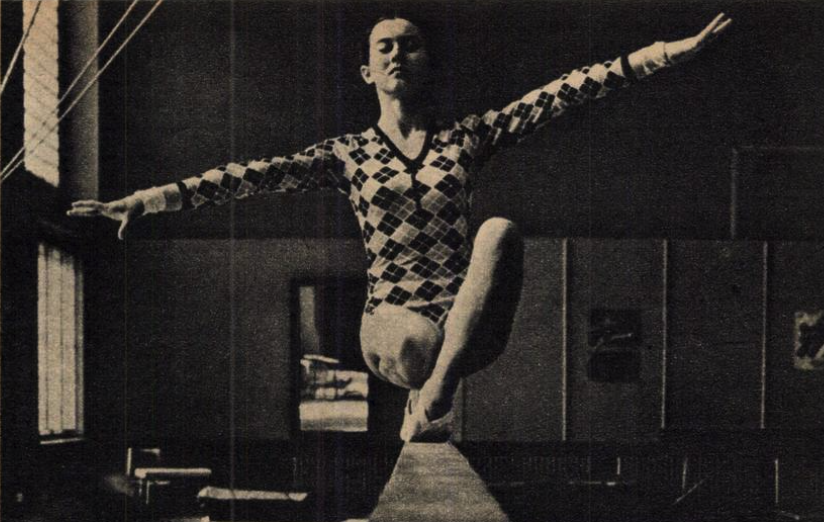

Lucja Matraszek (POL)

1972 and 1980 Olympian
1975 Paris Grand Prix AA Silver Medalist
Lucja was born on May 4, 1954, and started gymnastics at age 9 when her sister brought her to the gym. The coaches thought she was not suited for the sport, but Lucja loved gymnastics and switched to another club where she blossomed. She represented her country for nine years (five European Championships, three World Championships, and two Olympic Games) and was a multiple Polish champion in both the all-around and individual events. She married Andrzej Chydzinski, a former gymnast who competed in the early 1960s and a national team coach (and her coach), after the 1976 Olympics and continued competing. She retired after the 1980 Moscow Olympics, graduated from the Warsaw College of Physical Education, and worked as a coach at her club, Gwardia Warszawa.
Competition Results
1970
NED-POL Dual Meet: 1st Team, 11th AA
POL-YUG Dual Meet: 1st Team, 3rd AA
Polish Championships: 1st B
1971
European Championships: 11th AA
Golden Sands International: 5th AA
Katowice International: 1st Team, 3rd AA
Polish Championships: 2nd AA
Sofia International: 5th AA
YUG-POL Dual Meet: 1st Team, 1st V
1972
FRG-POL Dual Meet: 2nd Team, 2nd AA
NOR-POL Dual Meet: 1st Team, 3rd AA
Olympic Games: 10th Team, 45th AA (prelims)
POL-HUN-SUI-ESP Quad Meet: 1st Team, 1st AA
Polish Championships: 2nd AA, 1st UB
Polish Team Championships: 3rd Team, 2nd AA
SUI-POL Dual Meet: 1st Team, 4th AA
1973
Antibes International: 3rd AA, 2nd V, 3rd UB, 3rd FX
Dynamo Spartakiade: 1st Team, 1st AA, 1st UB, 1st FX, 2nd B, 3rd V
European Championships: 13th AA
POL-FRG Dual Meet: 1st Team, 1st AA
POL-SUI Dual Meet: 1st Team, 2nd AA
Polish Championships: 1st AA, 1st V, 1st UB, 1st B, 1st FX
Polish Team Championships: 2nd Team, 1st AA
Sofia International: 5th AA
1974
Blume Memorial: 4th AA
Bratislava International: 2nd FX, 3rd UB
Copenhagen International: 4th Team
Polish Championships: 1st AA, 1st V, 1st UB, 1st FX
World Championships: 10th Team, 51st AA (prelims.)
1975
Budapest-Warsaw Dual Meet: 1st Team, 1st AA
CSSR-POL Dual Meet: 1st Team, 1st AA
Dynamo Spartakiade: 4th Team, 6th AA, 3rd UB
European Championships: 13th AA
FRA-POL Dual Meet: 1st Team, 2nd AA
Paris Grand Prix: 2nd AA, 1st UB, 2nd V
Polish Championships: 1st AA, 1st V, 1st UB, 1st B, 1st FX
Pre-Olympic Test Event: 22nd AA
1976
Belarus SSR-POL Dual Meet: 2nd Team, 1st AA, 1st B, 2nd V, 2nd UB, 2nd FX
Golden Sands International: 5th AA
HUN-POL-SUI-ESP Meet: 2nd Team, 1st AA
Milk Meet: 6th AA
Polish Championships: 1st AA, 1st V, 1st B, 1st FX, 2nd UB
Women's Olympic Qualifying Meet: 4th AA
1977
European Championships: 14th AA
Paris Grand Prix: 6th AA, 3rd UB, 1st FX
Polish Championships: 1st AA, 1st V, 1st UB, 1st B, 1st FX
Polish Team Championships:1st Team, 1st AA
SUI-POL Dual Meet: 2nd Team, 2nd AA
University Games: 5th UB, 7th V
1978
Antibes International: 7th AA
Cottbus International: 8th AA
CSSR-HUN-POL-FRA Meet: 3rd Team, 6th AA
Dynamo Championships: 5th Team, 15th AA
Orleans International: 10th AA
World Championships: 11th Team, 18th AA
1979
Cottbus International: 11th AA
Dynamo Spartakiade: 4th AA, 2nd FX
European Championships: 10th AA, 6th B
Grunwald International Cup: 1st AA, 1st V, 1st B, 1st FX
Olsztyn International: 1st AA
Paris Grand Prix: 7th AA
Polish Championships: 2nd AA
World Championships: 11th Team, 30th AA
1980
Olympic Games: 7th Team, 36th AA
Polish Championships: 1st AA, 1st UB
President's Cup: 1st AA
This page was created on December
24, 2004 and was last updated on May 15, 2026.
© Gymn Forum